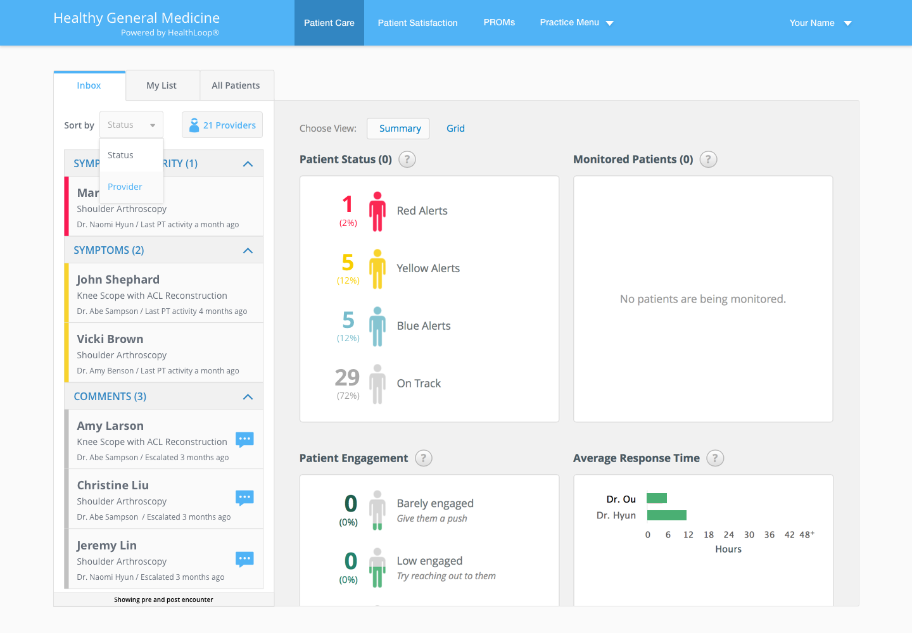
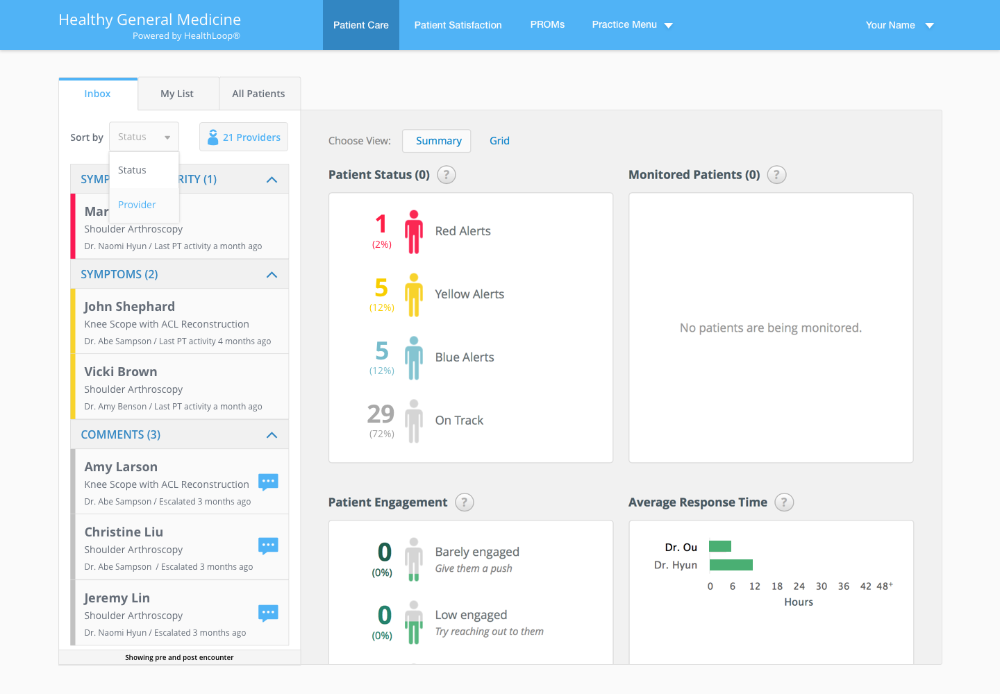

Staff Inbox Redesign
Optimize the process for staff to clean up inbox

Optimize the process for staff to clean up inbox
HealthLoop helps the care team stay connected with patients through their surgical journey. As hospital staff, they work with multiple providers and interact with their patients regarding symptoms, comments, and questions.
This goal is to improve staff’s work efficiency by optimizing the process of cleaning up to-dos and making the configuration more accessible and intuitive. The challenge is to accommodate different size of healthcare organizations since our business is shifting from small and midsize business (SMB) to enterprise solutions.
As the project owner, I’m responsible for the app UI redesign, UX enhancement, and usability testing. I worked with a cross-functional team, including product manager, customer support team, and engineers. Contribution included wireframing, task flow, UI revamp, iterations based on internal critique and user studies.
From initial research, the only way of organizing to-dos by patient symptom severity is not convenient for staff users when doctors have different protocols or instructions.

Staff sometimes use the filter to view patients by provider. After hiding doctors, they forget to switch the toggle back and thus miss following up with patients regarding their symptoms. This can potentially cause patient safety issue.


Provider list is hidden under “Account Preferences” and not easy to find when staff users want to adjust the doctors they work with.

Provider list is not scalable for large health systems that have more complex organization hierarchy. Staff users also need a better way to deal with large amount of data.


To deepen the knowledge about staff’s behavior and ensure that designs get more effective with each cycle of testing, I established the research plan, defined tasks, recruited participants, and conducted remote usability testing sessions with 6 current HealthLoop staff users.
It’s helpful when doctors have different protocols or preferences.
I don’t need to go to the practice setting. It’s a good idea of having the two options of grouping things.
I know physicians I am looking at and covering with.
 


Incorporate the use case that providers have different instructions or protocols and give staff users flexibility to clean up the inbox.
Always see the full to-do list coming from patients. No more hidden provider and no more missing info.


Provide a quick entry point to make the configuration accessible and easy to find.
Enable browsing and a two-layer search to support different organizational structures.
After validating the solution, I began to work on mobile design and adjusted the features based on the usage frequency and information architecture.

Mobile Work Example